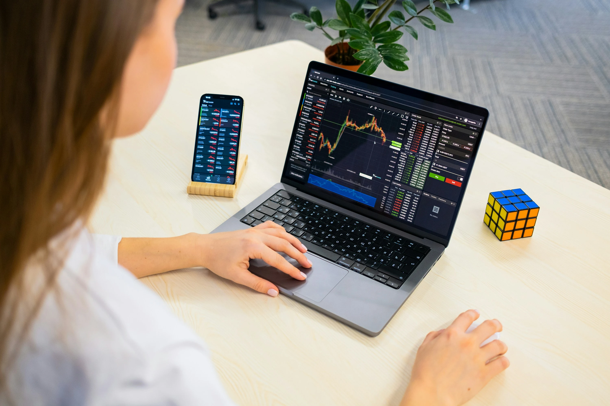
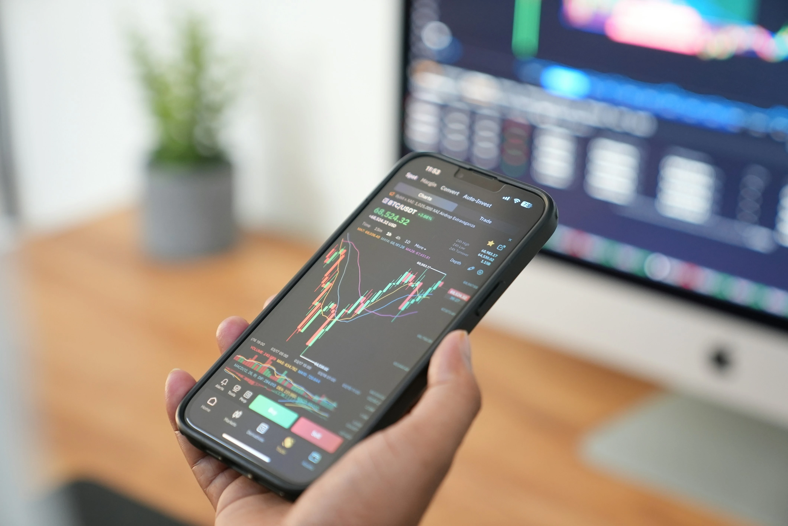

M iles de personas entran al trading cada día pensando que van a ganar dinero rápido. La mayoría termina perdiendo porque opera sin entender realmente cómo funciona el mercado.
Muchos principiantes saltan entre estrategias, copian señales de internet o toman decisiones impulsivas esperando resultados inmediatos. Pero en trading, entrar sin una metodología clara suele costar caro.
Existen estrategias diseñadas para distintos estilos de operación: algunas buscan movimientos rápidos, mientras otras intentan aprovechar tendencias más largas y estables.
En este artículo descubrirás las estrategias de trading más utilizadas por principiantes, cómo funcionan y cuál puede adaptarse mejor a tu forma de operar.
Cómo empezar en trading de forma más inteligente
Empezar en trading puede parecer abrumador al principio. Existen miles de estrategias, indicadores y opiniones distintas circulando en internet todos los días.
Por eso, muchos principiantes avanzan más rápido cuando se enfocan en aprender conceptos básicos del mercado antes de intentar operar constantemente. Entender cómo se mueve el mercado suele ser más importante que buscar ganancias inmediatas.
En este modelo de negocios, donde además debes poner a prueba tu nivel constantemente incluso con inversiones de capital mínimo, es importante comprender que sostenerse de forma consistente no es nada fácil. El riesgo es alto y gran parte del aprendizaje suele llegar después de una pérdida.
A medida que una persona desarrolla experiencia, comienza a reconocer tendencias, zonas importantes y mejores momentos para entrar o mantenerse fuera del mercado.
Aprender trading no consiste únicamente en memorizar indicadores. También implica desarrollar paciencia, disciplina y una metodología clara para tomar decisiones con mayor lógica.
Las estrategias de trading más usadas
Qué es el scalping y cómo funciona esta estrategia de trading

El scalping exige disciplina y control emocional.
El scalping es una estrategia enfocada en movimientos muy pequeños del mercado. El objetivo es abrir y cerrar operaciones en pocos minutos o incluso segundos, buscando ganancias rápidas y repetidas.
Los traders que usan scalping suelen operar en temporalidades bajas como 1 minuto o 5 minutos. Aprovechan pequeñas fluctuaciones de precio utilizando alta concentración y rapidez en la ejecución.
El scalping suele considerarse una estrategia de trading agresivo y de corto plazo debido a la velocidad con la que se ejecutan múltiples operaciones dentro de una misma sesión de mercado.
Plataformas para trading de corto plazo y scalping
Ventajas del scalping
- Permite encontrar múltiples oportunidades durante el día
- Reduce la exposición prolongada al mercado
- Puede generar experiencia rápida en lectura de gráficos
Desventajas del scalping
- Requiere mucha disciplina emocional
- Las comisiones pueden afectar las ganancias
- El estrés operativo suele ser alto
El scalping no suele ser recomendable para personas que recién comienzan sin experiencia en gestión emocional.
Qué es el swing trading y por qué muchos principiantes lo prefieren
El swing trading consiste en mantener operaciones abiertas durante varios días o semanas buscando capturar movimientos más amplios del mercado.
A diferencia del scalping, esta estrategia no exige estar frente al gráfico todo el día. El trader analiza tendencias, identifica zonas importantes y espera que el precio desarrolle un movimiento mayor.
Por qué el swing trading es popular entre principiantes
El swing trading suele adaptarse mejor a personas que trabajan, estudian o no pueden monitorear el mercado constantemente.
Además, permite tomar decisiones con menos presión y evita gran parte del ruido presente en temporalidades bajas.
Qué se necesita para hacer swing trading
- Paciencia para esperar confirmaciones
- Buena lectura de tendencias
- Gestión de riesgo adecuada
- Control emocional para mantener operaciones abiertas
Muchos traders consideran que esta estrategia ofrece un equilibrio más saludable entre tiempo, análisis y presión psicológica.
Cómo funciona el day trading
El day trading se basa en abrir y cerrar operaciones dentro del mismo día. Ninguna posición permanece abierta durante la noche.
El objetivo es aprovechar movimientos intradía utilizando análisis técnico, volumen y comportamiento del precio.
A diferencia del scalping, las operaciones pueden durar desde varios minutos hasta algunas horas.
Características del day trading
- Requiere seguimiento constante del mercado
- Utiliza análisis técnico de corto plazo
- Necesita disciplina para respetar entradas y salidas
Muchos principiantes se sienten atraídos por esta estrategia porque ofrece actividad constante. Sin embargo, también exige experiencia para evitar operar impulsivamente.
Cómo usar soportes y resistencias en trading
Los soportes y resistencias son una de las herramientas más utilizadas dentro del análisis técnico.
Un soporte es una zona donde el precio suele detener caídas debido a la presencia de compradores. Una resistencia es una zona donde el precio tiende a frenarse por presión vendedora.
P = (Máximo + Mínimo + Cierre) / 3
Aunque parecen conceptos simples, son fundamentales para entender cómo se mueve el mercado.
Por qué son importantes
Los soportes y resistencias ayudan a:
- Identificar posibles entradas
- Detectar zonas de reacción del precio
- Establecer objetivos y niveles de stop loss
Muchos traders construyen estrategias completas basadas únicamente en estas zonas.
Error común de los principiantes
Uno de los errores más frecuentes es dibujar demasiadas líneas en el gráfico. El análisis pierde claridad cuando se intenta marcar cada pequeño movimiento.
Las zonas más importantes suelen encontrarse en niveles donde el precio reaccionó varias veces anteriormente.

eToro vs Binance: ¿cuál es mejor para principiantes que quieren empezar en trading en 2026?
Cómo funciona el RSI en trading
El RSI, o Índice de Fuerza Relativa, es uno de los indicadores técnicos más conocidos.
Sirve para medir la fuerza de un movimiento y detectar posibles zonas de sobrecompra o sobreventa.
RSI = 100 - (100 / (1 + RS))
Cuando el RSI supera ciertos niveles, algunos traders interpretan que el activo podría estar agotando su movimiento actual.
Cómo interpretan el RSI los traders
- RSI por encima de 70: posible sobrecompra
- RSI por debajo de 30: posible sobreventa
Sin embargo, el RSI no debe utilizarse de forma aislada. En tendencias fuertes, el precio puede mantenerse mucho tiempo en niveles extremos.
Por eso suele combinarse con estructuras del mercado o soportes y resistencias.
Qué son las medias móviles y cómo se utilizan

Muchos traders utilizan medias móviles para confirmar tendencias.
Las medias móviles ayudan a suavizar el movimiento del precio para identificar tendencias con mayor claridad.
Existen varios tipos, aunque las más utilizadas son:
- Media móvil simple (SMA)
- Media móvil exponencial (EMA)
SMA = (P1 + P2 + P3 + ... + Pn) / n
Cómo usan las medias móviles los traders
Muchos operadores utilizan cruces de medias móviles para detectar posibles cambios de tendencia.
Por ejemplo:
- Una media corta cruzando por encima de una larga puede interpretarse como señal alcista
- Una media corta cruzando por debajo puede indicar debilidad
También sirven como zonas dinámicas de soporte y resistencia.
Qué estrategia de trading debería usar un principiante
No existe una estrategia perfecta para todos. Cada método depende del tiempo disponible, tolerancia al riesgo y personalidad del trader.
Un principiante suele beneficiarse más de estrategias simples y fáciles de entender antes de intentar sistemas complejos.
Lo más importante no es la estrategia
Muchos traders pierden dinero incluso usando buenas estrategias porque no respetan reglas básicas como:
- Gestión del riesgo
- Tamaño correcto de posición
- Control emocional
- Paciencia para esperar confirmaciones
La consistencia normalmente proviene de ejecutar un sistema de manera disciplinada, no de buscar indicadores mágicos.
Cómo empezar en trading desde cero y entender sus principales estrategias
Las estrategias de trading existen para darle estructura a las decisiones dentro del mercado. Sin una metodología clara, el trading suele convertirse en apuestas emocionales.
El scalping, swing trading y day trading representan estilos diferentes de operar. Mientras algunos buscan velocidad y movimientos rápidos, otros prefieren tendencias más largas y análisis más tranquilos. Cada estrategia requiere distintos niveles de tiempo, concentración y tolerancia al riesgo.
Herramientas como soportes, resistencias, RSI y medias móviles ayudan a interpretar el comportamiento del precio, pero ninguna garantiza resultados por sí sola.
Entender cómo funcionan estas herramientas, practicar con disciplina y evitar la idea de que el trading es dinero fácil son claves para comenzar con una base sólida. La formación constante suele ser uno de los factores más importantes para mejorar en trading.
Consejos básicos para empezar en trading con mejor preparación
Aprender trading no consiste en encontrar una fórmula secreta oculta, sino en adquirir experiencia con un sistema que funcione.
Consiste en desarrollar habilidades, paciencia y capacidad para gestionar el riesgo en todo momento.
Las estrategias más usadas por principiantes ofrecen distintos enfoques para analizar el mercado y ejecutar operaciones con mayor lógica. Algunas requieren más tiempo y experiencia, mientras que otras permiten un proceso de aprendizaje más controlado y una mejor adaptación emocional ante la volatilidad.
Antes de operar con dinero real, lo más recomendable es estudiar una sola estrategia, practicarla y comprender sus ventajas, limitaciones y tus capacidades dentro del entorno. La disciplina suele ser más importante que intentar obtener ganancias rápidas.
En trading, la consistencia suele construirse a partir de la práctica y no de la velocidad para ganar dinero. Muchos traders principiantes mejoran cuando aprenden a controlar el riesgo desde el inicio.
Además, mantener expectativas realistas ayuda a tomar decisiones más racionales y evita cometer errores impulsivos. La preparación y la constancia suelen marcar la diferencia a largo plazo.